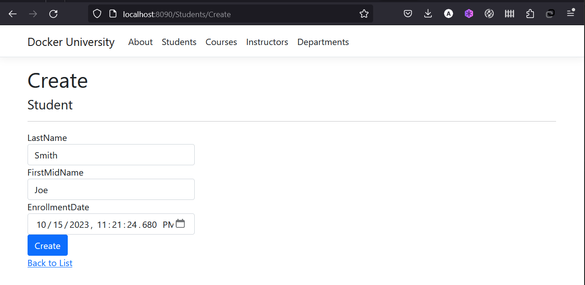

In case you didn't notice, our todo list is being wiped clean every single time we launch the container. Why is this? Let's dive into how the container is working.
The Container's Filesystem¶
When a container runs, it uses the various layers from an image for its filesystem. Each container also gets its own "scratch space" to create/update/remove files. Any changes won't be seen in another container, even if they are using the same image.
Seeing this in Practice¶
To see this in action, let's run the univerity application, an example dotnet core app the reads data from a sqlite data. The app is a web site for a fictional Docker University that includes functionalities such as student admission, course creation, and instructor assignments.
-
Pull the docker image from docker hub https://hub.docker.com/r/maghbari/university-app
bash docker pull maghbari/university-app1. Start your container using thedocker runcommand and specify the name of the image we just pulled:bash docker run --name=university-app -d -p 8090:80 maghbari/university-app -
After a few seconds, open your web browser to http://localhost:8090. You should see our app!

-
Using the app UI, Go ahead to Students menu and add a student or two and see that it works as you expect. Refresh the page to ensure the frontend is successfully storing items in the backend.

-
Now, let's remove the container
bash docker rm -f university-appexecutedocker psto ensure the container is removed -
Now, Start the container again using the same command you have previously used:
bash docker run --name=university-app -d -p 8090:80 maghbari/university-appGo again to Students menu qnd look! The Student you have added are not there! That's because the data was written to the scratch space of the container.
Container Volumes¶
With the previous experiment, we saw that each container starts from the image definition each time it starts. While containers can create, update, and delete files, those changes are lost when the container is removed and all changes are isolated to that container.
With volumes, we can change all of this.
Volumes provide the ability to connect specific filesystem paths of the container back to the host machine. If a directory in the container is mounted, changes in that directory are also seen on the host machine. If we mount that same directory across container restarts, we'd see the same data.
There are two main types of volumes. We will eventually use both, but we will start with named volumes.
Persisting our Todo Data¶
By default, the university app stores its data in a SQLite Database at
/db/CU.db. If you're not familiar with SQLite, no worries! It's simply a relational database in
which all of the data is stored in a single file.
With the database being a single file, if we can persist that file on the host and make it available to the
next container, it should be able to pick up where the last one left off. By creating a volume and attaching
(often called "mounting") it to the directory the data is stored in, we can persist the data. As our container
writes to the CU.db file, it will be persisted to the host in the volume.
As mentioned, we are going to use a named volume. Think of a named volume as simply a bucket of data. Docker maintains the physical location on the disk and you only need to remember the name of the volume. Every time you use the volume, Docker will make sure the correct data is provided.
-
Create a volume by using the
docker volume createcommand.bash docker volume create db_volume -
Stop the univeristy app container once again in the Dashboard (or with
docker rm -f <container-id>), as it is still running without using the persistent volume. -
Start the univeristy app container, but add the
-vflag to specify a volume mount. We will use the named volume and mount it to/db, which will capture all files created at the path.bash docker run -d --name university-app -p 8090:80 -v db_volume:/db/ university-app -
Once the container starts up, open the app and add a few items through the students menu.
-
Remove the container for the university app. Use the Dashboard or
docker psto get the ID and thendocker rm -f <container-id>to remove it. -
Start a new container using the same command from above.
-
Open the app. You should see all students data still in your list!
-
Go ahead and remove the container when you're done checking out your list.
Now You've now learned how to persist data!
Pro-tip
While named volumes and bind mounts (which we'll talk about in a minute) are the two main types of volumes supported by a default Docker engine installation, there are many volume driver plugins available to support NFS, SFTP, NetApp, and more! This will be especially important once you start running containers on multiple hosts in a clustered environment with like Kubernetes.
Diving into our Volume¶
A lot of people frequently ask "Where is Docker actually storing my data when I use a named volume?" If you want to know,
you can use the docker volume inspect command.
docker volume inspect todo-db
[
{
"CreatedAt": "2023-10-15T22:14:39Z",
"Driver": "local",
"Labels": null,
"Mountpoint": "/var/lib/docker/volumes/db_volume/_data",
"Name": "db_volume",
"Options": null,
"Scope": "local"
}
]
The Mountpoint is the actual location on the disk where the data is stored. Note that on most machines, you will
need to have root access to access this directory from the host. But, that's where it is!
In the previous chapter, we talked about and used a named volume to persist the data in our database. Named volumes are great if we simply want to store data, as we don't have to worry about where the data is stored.
Using Bind Mounts¶
In the previous example, we used a named volume to persist the data in our database. Named volumes are great if we simply want to store data, as we don't have to worry about where the data is stored.
With bind mounts, we control the exact mountpoint on the host. We can use this to persist data, but is often
used to provide additional data into containers. Let's again work with the university application, but now
we will use a bind mount to
mount a host path in which the CU.db will be stored.
-
Stop the univeristy app container once again in the Dashboard (or with
docker rm -f <container-id>). -
Start the univeristy app container, but now the
-vflag will specify a binding mount on the host instead of using a named volume.bash docker run -d --name university-app -p 8090:80 -v c:/Users/MO/db/:/db/ university-appNote that the binding mount pathc:/Users/MO/db/should be replaced by a path in your host machine. -
Open the folder where the binding mount path located, and there you will find the database file
CU.db -
Once the container starts up, open the app and add a few items through the students menu.
-
Now try removing and running the container again using the last
docker runcommand we have used You will find that all students data still in your list!
At this point, we have a functioning application that can survive restarts or damages!